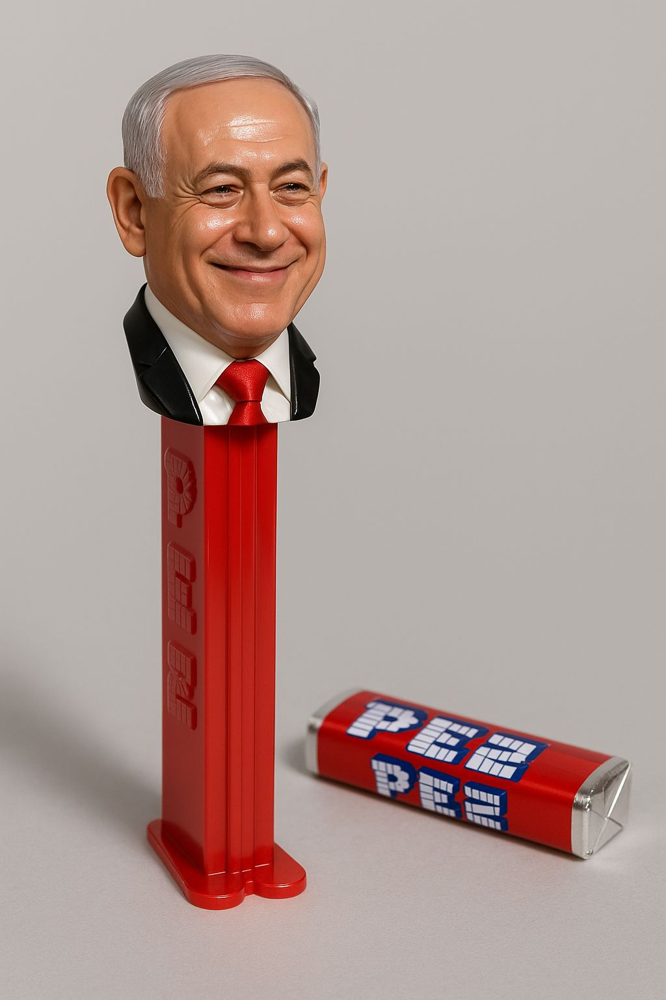
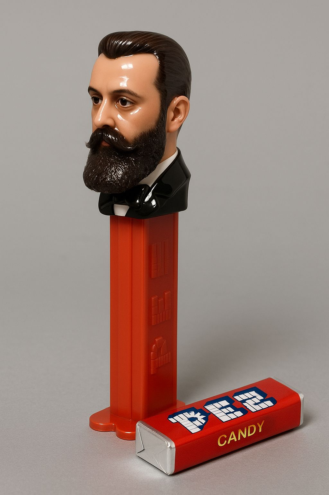
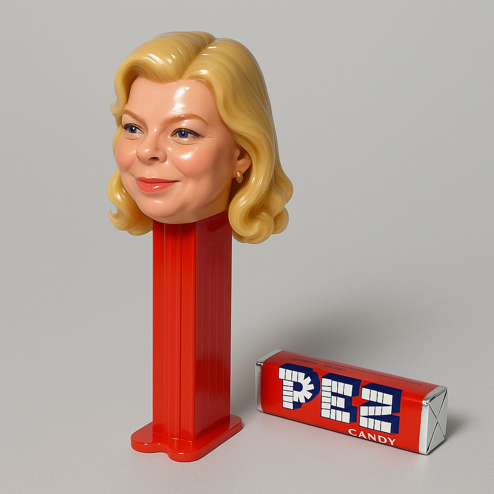
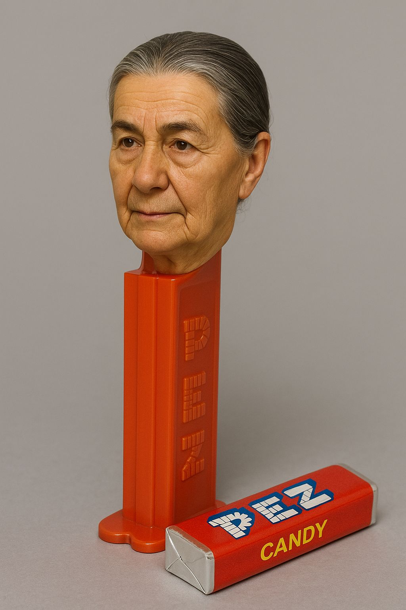

הפרומפט:
פורסם במקור ב LinkedIn
הפרומפט:
"דמיין את הראש של האדם הזה בתור ראש של מתקניית PEZ פוטוריאליסטית - עם בסיס ארוך וראש קטן מבריק מפלסטיק צעצוע. לידו מונחת חבילת PEZ מקורית בצבע אדום. רקע אפור בהיר, עם השתקפויות מבריקות על הפלסטיק."
(מדביקים ב-ChatGPT בצירוף התמונה שתרצו להפוך לסוכריית פז)
תהנו 😆



